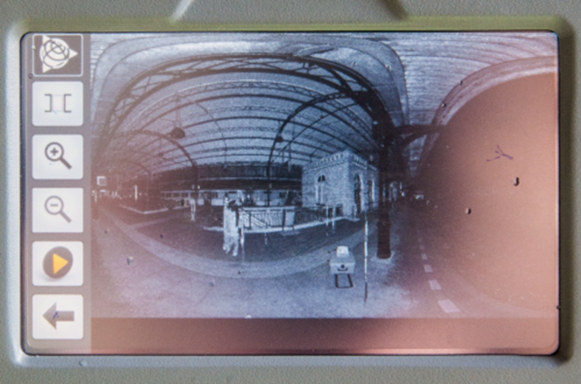

Мавзу: Лазер сканер съёмка натижаларини дастурий таъминотда қайта ишлаш
Reja.
1. Amaliy tajribalarni o`tkazish
2. Ma`lumotlarni tahlil qilish
3. Natija
Amaliy tajribalarni o`tkazishda xavo harorati va namligi muhum axamiyat kasb etadi. Joyda
baza o`rnatilgan xolda sferalar maqbul joylarga o`rnatiladi. Obyekt tanlangach ko`rinish
bo`saxasining gradus qiymatlari beriladi va start tugmachasi bosiladi. Ish sifati va
berilgan burchagiga qarab davomiyligi daqiqa va foiz ko`rsatkichida displeyda namoyon
bo`ladi. Bu o`rtacha 4 daqiqadan 4 soatgacha vaqtni oladi.

Barcha tadqiqot natijalari fleshkadan olinadi va kompyuterga ulanadi. Kompyuterda Trimble
RealWorks dasturi yuklanib Projekts papkasi ichiga saqlangan fayl yuklan olinadi. Olingan
ma`lumotlardagi sferalar ketma-ketlikda raqamlanadi va shu tariqa bo`laklar bir-biri bilan
bog`lanadi. Taxlil natijalariga ko`ra nuqtalarning bulutli tasviri xosil bo`ladi.
Taxlil qilingan natijalar maxsuli nuqtalarning bulutli tasvirini tutatshtirish natijasida
sirt xosil qilinadi. Hosil bo`lgan sirtga o`zgartirishlar va tuzatmalar kiritish mumkin.
Tasvirga tushmay qolgan yoki yopiq xoldagi joylarni yaratish mumkin. Ranglar uyg`unligida
yaratilgan joylarni ko`chirma tarzida ranglash imkoni mavjud. Naturada syomka ishlari
davrida pribor tasvirga tushurgan foto lavhalar tekstura tarzida nuqtalarga qoplanadi.
Natijada joyning real uch o`lchamli modeli hosil bo`ladi. Modelni boshqa format birliklariga
export qilish mumki. Masalan: ArcGIS, AutoCAD, Google SketchUP, Mashlab, Agisoft Photo
Scane.